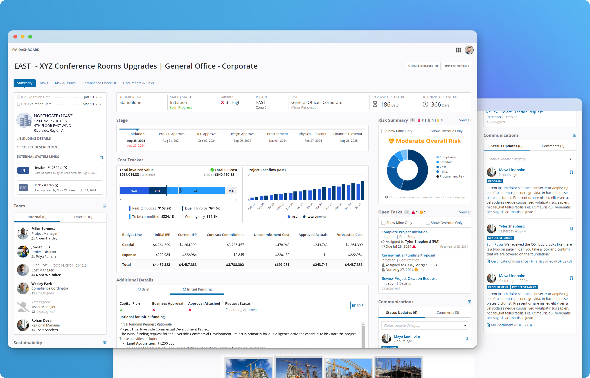
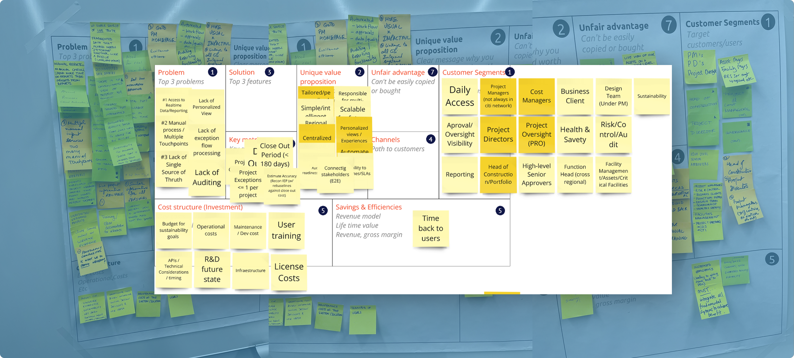
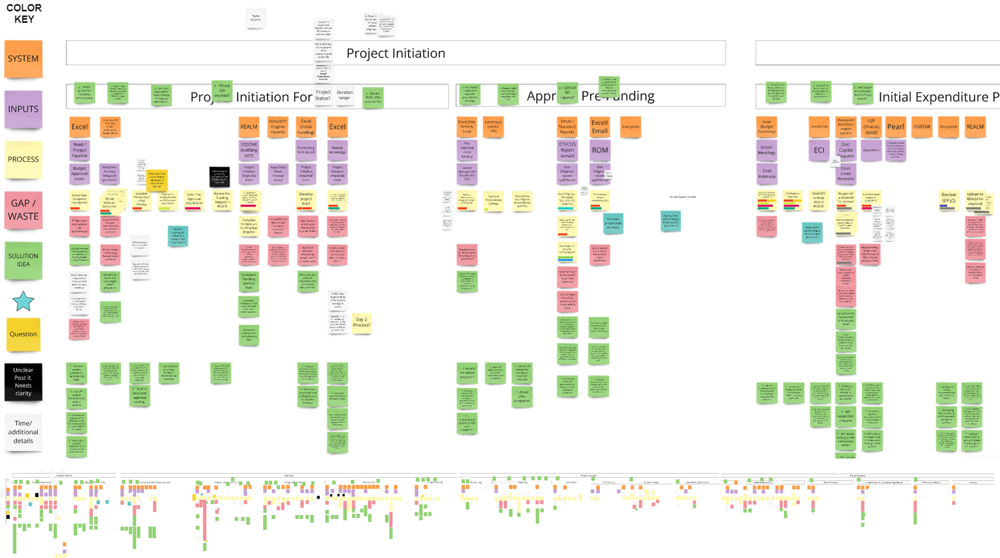
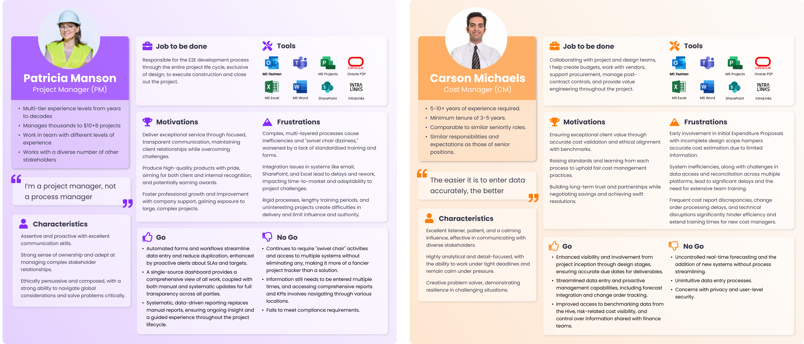
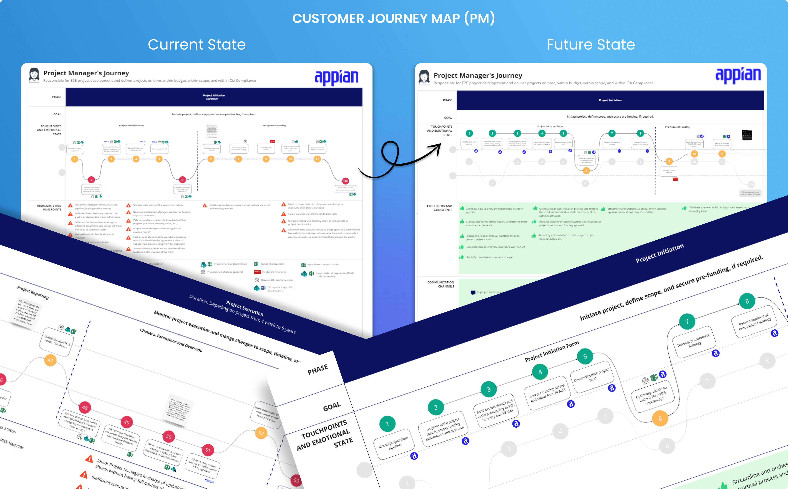
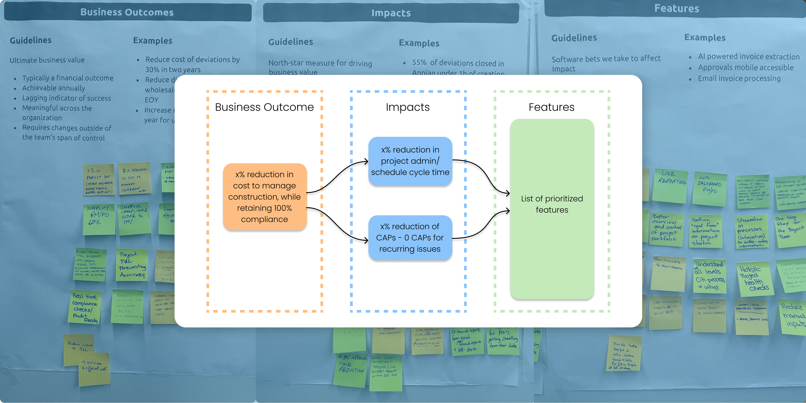

Giving construction project managers their time back
A discovery and UX design engagement to streamline project management so people can focus on the work that adds value.
- Role
- Product Designer, leading UX and UI design and user interviews
- Company
- Appian, Principal Consultant
- Engagement
- July to August 2024, eight week discovery phase
- Stakeholders
- 20+, including executive operations leaders and sponsors

Overview
A major corporation runs an in house project management department that oversees construction across a large portfolio of buildings. They need high quality project managers who can focus on project outcomes instead of administrative work.
I led the UX and UI design and the user interviews during the first eight weeks of discovery. That work set the stage for the advanced design phase and implementation that followed.
The challenge
The process ran on a patchwork of spreadsheets, email, SharePoint workflows, and manual "swivel chair" work, where people copy data from one system into another. Data was re-entered, tracked, consolidated, validated, and distributed by hand, and handoffs and compliance checks were followed up manually.
The result was delays and process lapses across the whole project lifecycle. Vendors grew frustrated and some left, which is costly when every new vendor needs extensive onboarding.
There was a second challenge. The client had started discovery with a management consulting firm, then moved to Appian for more actionable insight. That raised fears of redoing earlier work, and the materials we inherited did not fit our approach, so we had to adjust quickly and bring the client along.
Discovery
Stakeholders from around the world gathered at headquarters for a week one kickoff. After the introductions, we went straight into mapping how work actually flowed.
Asking "why" before "what"
To spark creativity and collaboration, I ran a Lean Business Canvas exercise. It is usually a consumer tool rather than something used for enterprise applications, but it worked. It surfaced shared and individual views across stakeholders and moved the group from asking "what" to asking "why."
We deliberately held off on solutions until discovery was finished. Resisting the urge to jump to answers was one of the hardest parts of this engagement, as it is on many.

Mapping the whole process
Next came a value stream map of the full process from start to finish. Earlier artifacts turned out to be of little help, but the client had thought hard about their process and gave us a basic outline of each project phase and its key activities.
For five days we spent eight hours a day in a conference room, asking, documenting, confirming, and asking again. I avoided re-asking for anything the team had already shared, which I had reviewed the week before the visit. By the end we had a clear picture of every handoff to other systems, the different personas involved, and where users hit pain.

Who we were designing for
The project manager quickly became the primary persona. Each region and each project manager worked differently, with no shared controls or standards for data quality, so other personas spent large amounts of time creating, chasing, validating, cleaning, and consolidating reporting spreadsheets.
More than a dozen personas touch the solution, but two mattered most to usability. Project managers run a project from initiation to close out and are the central contact for everyone else. Cost managers are third party specialists who make sure costs are estimated and tracked so projects stay on budget.

Seeing the experience through their eyes
I turned the value stream map into a current state journey map for the project manager, marking each touch point, how the person felt at that moment, and the pain points. Project managers spent most of their days somewhere between indifferent and frustrated, weighed down by manual, repetitive work.
Bringing the scattered processes into one platform and removing the repetitive steps changed that picture, and marking each touch point made the shape of the solution clearer.

Tying the design to business impact
To connect the solution to bigger business outcomes, we ran an impact mapping exercise on the whiteboard to learn what tangible results stakeholders wanted. It was hard for people who spend their days doing the work to step back to a 30,000 foot view, but it gave the team a shared view of outcomes, impacts, and prioritized features.

What happened next
Add the outcome here: what the client decided, what was built next, and any result you can share.